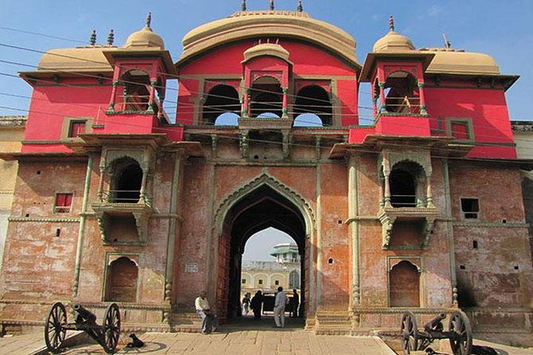

Ramnagar Fort
The Ramnagar Fort is a fortification in Ramnagar, Varanasi, India. It is located near the Ganga River on its eastern bank, opposite to the Tulsi Ghat. The sandstone structure was built in the Mughal style in 1750 by Kashi Naresh Raja Balwant Singh. At present, the fort is not in a good shape. The current king and the resident of the fort is Anant Narayan Singh, who is also known as the Maharaja of Varanasi even though this royal title has been abolished since 1971.
The fort palace appears very vibrant and colourful when beatified during the one-month-long Ram Lila festival where different episodes of Ramayana are enacted. On this occasion, a colourful pageant or procession of Ramayana epic is presented as part of the Dussehra celebrations that is held in October under the patronage of the Maharaja. These celebrations are concluded on the last day, the Dashami day (10th day of bright half of Lunar month) as per Hindu Calendar (October as per Gregorian Calendar, with the burning of the effigy of Ravana, the demon king, and his associates, which signifies victory of good over evil. The festival also includes a procession of various antique displays of Royal possessions.
The Maharaja continues his family tradition of attending the annual month-long Ram Lila drama festival held in the streets behind the fort by riding on a decorated elephant at the head of the procession. In olden days, the drama was performed by the native regiments and the epic story of Ramayana scripture was read through the month-long festival. Other festivals held in the fort are in the month of Magh (January and February) in front of the Veda Vyasa temple where pilgrims visit Ramnagar. In the month of Phagun, (February and March) a festival called Raj Mangal is held in the fort with a procession of boats with people, dancing and singing; it starts from the Asi Ghat, goes along the river in front of the fort.